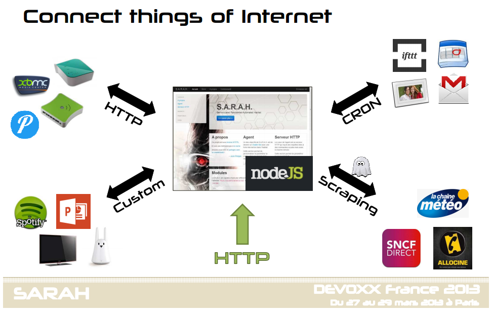

La domotique est devenu une tendance de fond dans les monde des bidouilleurs. C'est un sujet que je veux mettre en application depuis pas mal d'année. Il y a 2/3 ans lorsque j'ai fait construire ma maison, j'ai essayé de prévoir le coups. J'ai rapidement abandonné les solutions filaire. L'investissement de départ est très important : entre 10 000 € et 20 000 €.
Je me suis donc orienté vers les solutions sans fils. L'investissement se fait au fur et à mesure et on va pouvoir domotiser sa maison pour moins de 1000 €. J'ai d'abord voulu une solution tout en un à la apple. Delta Dore fut donc mon premier choix. J'ai donc fait installer les appareillages de bases pour commander le chauffage et mesurer la consomation (avec des watt-mètres installés dans le tableau élèctrique) : TyWatt 500, Une calybox et une sonde de température extérieure.
Ces choix ont été fait il y a 3 ans, depuis delta dore a pris beaucoups de retard par rapport aux marché : les technologie sons vieilles, on ne comprends pas ce qu'on peut faire avec leur box domotique.
Les solutions ont été très florissante ces 2 dernières années, du coups on se retrouve avec un ecosystème proche de la micro-informatique des années 80 : un nouveau système arrive tous les 6 mois pas forcément compatible avec le reste du monde. La grande différence est qu'on a beaucoups de solution vertical comme les bracelets connectés (fitbit, jawbone), les capteurs météo (netamo), les capteurs d'engrais et humidité (Flower power de parrot), nest, les balances (withings), etc... Bien sur, rien n'est fait pour faire fonctionner cela ensemble.
Enfin, en 2014, l'aspect vie privée est importante, je ne souhaite pas une solution basé sur des serveurs extérieures, qui a payer un peu plus.
En conséquence, j'ai changé ma stratégie pour m'orienter vers des solutions ouvertes, c'est dire bidouillable. Mais surtout des solutions de se connecter et d'aggréger plusieurs technologies et solution domotiques existantes.
On des solutions en java comme OpenHab, mais comme beaucoups de développeurs java, ils n'ont pas pris le chemin le plus simple : beaucoups d'abstraction, d'osgi etc... Il y aussi une solution basé sur Android : Imperihome, c'est compatible avec les principales box z-wave du marché et quelques solutions propriétaire.
Finalement, je me suis orienté vers S.A.R.A.H de @jpencausse. Ce schéma décrit bien la philosohie :
La principale particularité de la solution est que 90% des interactions se font à la voix via un kinect.
Ce qui m'a fait basculé, c'est la simplicité de la solution basée sur node.js et surtout la vitalité de la communauté.
Enfin autre choix, pour la partie controleur (commander une lumière, une prise etc...), je vais m'orienter vers du Do It Yourself et du z-wave.
En résumé, je suis partie d'un axe tout en un vers une stratégie bidouillabilité afin d'avoir le controle dessus. Ce n'est pas accessible pour le grand public car il faut savoir coder, mais j'aurais le contrôle sur les données et je ne serais pas limité par les systèmes existants.
PS : a noter que apple vient juste de mettre à disposition un SDK pour faire aussi role d'aggrégateur domotique avec Homekit.